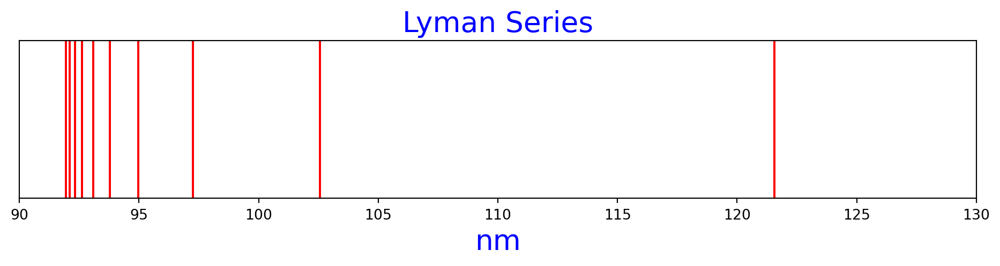
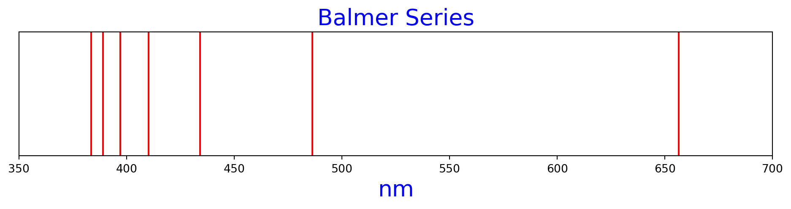
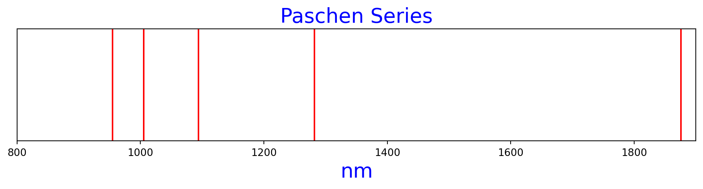

import matplotlib.pyplot as plt
def rydberg_nm(n1, n2):
"""
Calculates the Rydberg wavenumber between n1 and n2.
Parameters
----------
n1: int
The n1 level
n2: int
The n2 level
Returns
-------
float
Nanometer wavelength of the transition
"""
rh = 109677 # cm^-1, Rydberg constant
t1 = 1 / n1 ** 2
t2 = 1 / n2 ** 2
wavenumber = rh * (t1 - t2)
return 1 / wavenumber * 1e7Hydrogen spectra using Rydberg Formula
The Rydberg formula is used to predict emission spectrum lines from hydrogen. The significance of the Rydberg formula is that it was one of the first studies of quantum effects of energy transitions in atoms. Furthermore, it demonstrates that energy emitted is in specific wavelengths, corresponding to a particular energy level transition.
\[ \tilde\nu = R_H\Biggl(\frac{1}{n_{1}^2} + \frac{1}{n_{2}^2}\Biggr)\]
Where \(\) is the wavenumber in \(cm^{-1}\) and \(R_H = 109,677 cm^{-1}\). I transform these wavenumbers to nanometers with the equation \(= \).
In this post, I create spectrum lines using the Rydberg equation and create plots of the series named after the physicists that discovered them.
Python code to generate the plots is spread throughout the post.
Lyman series
https://en.wikipedia.org/wiki/Lyman_series
Figure 1 is the Lyman series of hydrogen spectrum lines, as calculated by the Rydberg formula.
n1=1, n2=2, nm=121.56909227398026
n1=1, n2=3, nm=102.57392160617086
n1=1, n2=4, nm=97.25527381918421
n1=1, n2=5, nm=94.97585333904709
n1=1, n2=6, nm=93.78187118278477
n1=1, n2=7, nm=93.07633627226615
n1=1, n2=8, nm=92.62407030398496
n1=1, n2=9, nm=92.31652944555377
n1=1, n2=10, nm=92.09779717725777
n1=1, n2=11, nm=91.93662603219758lyman_n2s = range (2, 12)
lyman = [rydberg_nm(1, n2) for n2 in lyman_n2s]
for nm, n2 in zip(lyman, lyman_n2s):
print(f'n1=1, n2={n2}, nm={nm}')
fig, ax = plt.subplots(nrows=1, ncols=1, figsize=(12, 2))
ax.set_title('Lyman Series', color='b', size=20)
ax.set_yticks([])
ax.set_xlim(90, 130)
ax.set_xlabel("nm", size=20, color='b')
for nm in lyman:
ax.axvline(nm, color='r')n1=1, n2=2, nm=121.56909227398026
n1=1, n2=3, nm=102.57392160617086
n1=1, n2=4, nm=97.25527381918421
n1=1, n2=5, nm=94.97585333904709
n1=1, n2=6, nm=93.78187118278477
n1=1, n2=7, nm=93.07633627226615
n1=1, n2=8, nm=92.62407030398496
n1=1, n2=9, nm=92.31652944555377
n1=1, n2=10, nm=92.09779717725777
n1=1, n2=11, nm=91.93662603219758
Balmer series
https://en.wikipedia.org/wiki/Balmer_series
Figure 2 is the Balmer series of hydrogen spectral lines, as calculated by the Rydberg formula.
n1=2, n2=3, nm=656.4730982794933
n1=2, n2=4, nm=486.27636909592104
n1=2, n2=5, nm=434.1753295499296
n1=2, n2=6, nm=410.2956864246834
n1=2, n2=7, nm=397.12570142833556
n1=2, n2=8, nm=389.02109527673684
n1=2, n2=9, nm=383.6531093841195balmer_n2s = range(3, 10)
balmer = [rydberg_nm(2, n2) for n2 in balmer_n2s]
for nm, n2 in zip(balmer, balmer_n2s):
print(f'n1=2, n2={n2}, nm={nm}')
fig, ax = plt.subplots(nrows=1, ncols=1, figsize=(12, 2))
ax.set_title('Balmer Series', color='b', size=20)
ax.set_yticks([])
ax.set_xlim(350, 700)
ax.set_xlabel("nm", size=20, color='b')
for nm in balmer:
ax.axvline(nm, color='r')n1=2, n2=3, nm=656.4730982794933
n1=2, n2=4, nm=486.27636909592104
n1=2, n2=5, nm=434.1753295499296
n1=2, n2=6, nm=410.2956864246834
n1=2, n2=7, nm=397.12570142833556
n1=2, n2=8, nm=389.02109527673684
n1=2, n2=9, nm=383.6531093841195
Paschen series
See https://en.wikipedia.org/wiki/Hydrogen_spectral_series#Paschen_series_(Bohr_series,n′=_3)
Figure 3 is the Paschen series of spectral lines as calculated by the Rydberg formula.
n1=2, n2=4 nm=1875.6374236556956
n1=2, n2=5 nm=1282.1740200771358
n1=2, n2=6 nm=1094.1218304658223
n1=2, n2=7 nm=1005.2244317404744
n1=2, n2=8 nm=954.8699611338087paschen_n2s = range(4, 9)
paschen = [rydberg_nm(3, n2) for n2 in paschen_n2s]
for nm, n2 in zip(paschen, paschen_n2s):
print(f'n1=2, n2={n2} nm={nm}')
fig, ax = plt.subplots(nrows=1, ncols=1, figsize=(12, 2))
ax.set_title('Paschen Series', color='b', size=20)
ax.set_yticks([])
ax.set_xlim(800, 1900)
ax.set_xlabel("nm", size=20, color='b')
for nm in paschen:
ax.axvline(nm, color='r')n1=2, n2=4 nm=1875.6374236556956
n1=2, n2=5 nm=1282.1740200771358
n1=2, n2=6 nm=1094.1218304658223
n1=2, n2=7 nm=1005.2244317404744
n1=2, n2=8 nm=954.8699611338087
References
See Physical Chemistry, 8th ed by Atkins and de Paula, page 320 for the Rydberg equation in wavenumbers. On https://www.powertechnology.com/calculators/ I found that you could convert wavenumbers in inverse centimeters to nanometers with \(= \), with wavelength in nanometers (search for the keyword “nanometer”.) Wikipedia contains an extensive article about the Rydberg formula and its history back to the 1880s https://en.wikipedia.org/wiki/Rydberg_formula